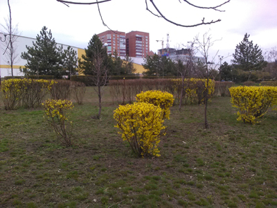
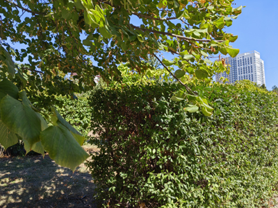

Кусты, которые скрывают кусты


Уже упоминавшийся в предыдущих статьях проекта сквер на бульваре Комарова. Первое фото сделано в марте 2020 года, прямо перед началом той самой эпохи — ну вы поняли, какой именно… Поняли же, да?
Когда еще не очень тепло и на деревьях не появились листья, расцветают яркими желтыми цветками кусты форзиции. Очень красивые. В последние лет 10 я часто замечаю их в разных скверах и дворах.
На данный момент из всех фотопар проекта здесь, кажется, перемены наиболее заметные. Помимо того, что стала пышнее крона дерева, заглядывающая в кадр сверху, на переднем плане высадили густую живую изгородь. Кстати, подобрать ракурс для повтора на этом кадре было сложнее всего. Долго пришлось высматривать какие-то мелкие детали, по которым можно было бы сопоставить угол обзора.


За кроной и изгородью сейчас, в сентябре 2026 года, не видно здания гипермаркета, домов вдали, и кустов форзиции. Но уныло-серыми башнями высятся дома, которые построили совсем недавно. Живая изгородь выглядит хорошо, но все же жалко, что не видно кустов форзиции. Очень уж люблю это растение.